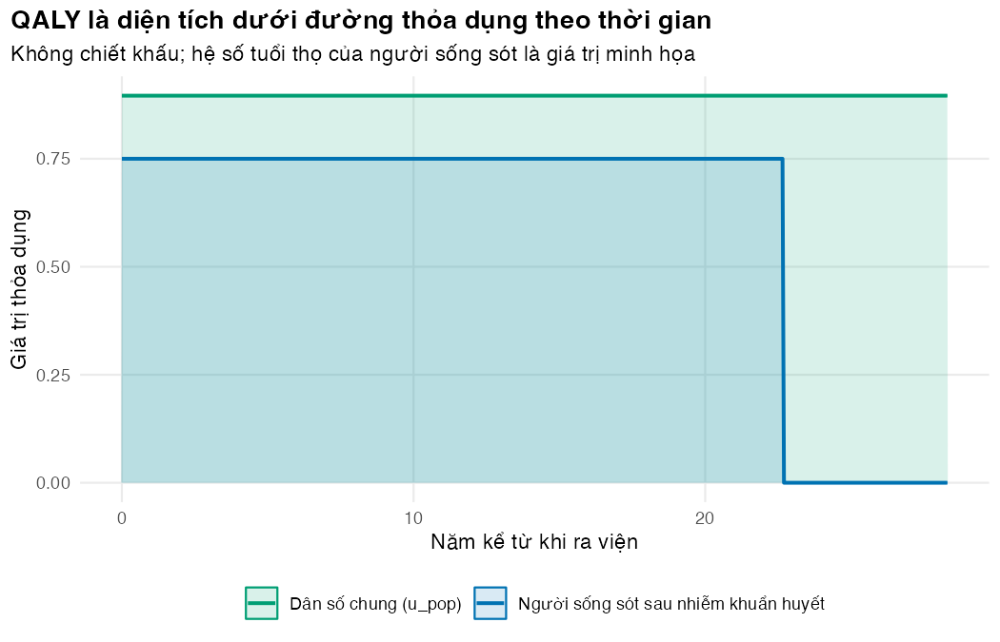
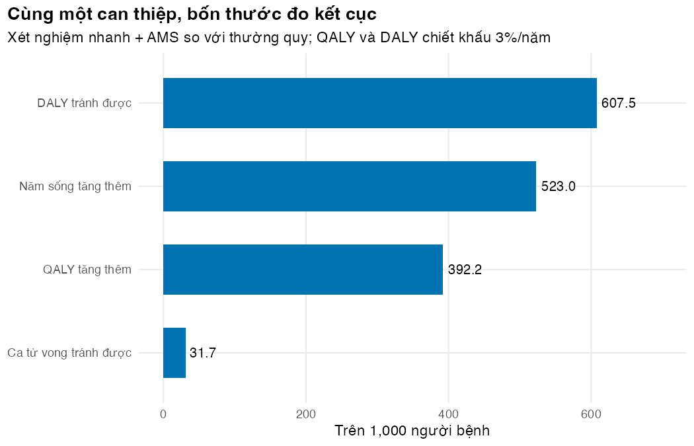

if (!isTRUE(l10n_info()[["UTF-8"]])) invisible(Sys.setlocale("LC_CTYPE", "en_US.UTF-8"))
source("../_shared/R/helpers.R")
source("../_shared/R/vn_data.R") # course-wide values: threshold, life table, CPI, prices
source("code/model.R")
library(ggplot2)
p <- load_params() # module parameters + shared values, costs in 2025 VND
inp <- prepare_inputs(p)
res <- run_tree(p)Bài 2: Năm sống, QALY và DALY
Đo lợi ích sức khỏe bằng một thước đo chung, và hiểu vì sao QALY tăng thêm không bằng DALY tránh được
Vì sao bạn nên quan tâm?
Khoa ICU nào cũng đếm “số ca cứu được”. Nhưng cứu một người 50 tuổi khác cứu một người 80 tuổi: theo bảng sống WHO cho Việt Nam, người 50 tuổi còn trung bình 28.3 năm, người 80 tuổi chỉ còn 6.8 năm (World Health Organization 2026). Trong ví dụ của module, xét nghiệm nhanh kèm AMS tốn thêm 21.8 triệu VNĐ cho mỗi ca tử vong tránh được, khoảng 4.1 tháng lương tối thiểu vùng I (Chính phủ 2025). Con số đó rẻ hay đắt còn tùy bạn đếm lợi ích bằng ca, năm sống, QALY hay DALY, và mỗi cách cho một ICER khác. Bài này giúp bạn chọn thước đo kết cục và giải thích được vì sao các con số lệch nhau.
Mục tiêu học tập
Sau bài này, bạn có thể:
- Tính năm sống (LY), QALY và DALY (= YLL + YLD) cho một người bệnh và cho một chiến lược.
- Phân biệt giá trị thỏa dụng (utility) với trọng số bệnh tật (disability weight).
- Giải thích vì sao QALY tăng thêm khác DALY tránh được với cùng một can thiệp.
- Chọn và biện luận thước đo kết cục ở nước thu nhập thấp và trung bình.
Ý chính
- Năm sống chỉ đếm thời gian sống. QALY nhân mỗi khoảng thời gian với giá trị thỏa dụng: 1 là sức khỏe hoàn hảo, 0 là tử vong, giá trị âm là “tệ hơn chết”. DALY đếm sức khỏe bị mất: năm sống mất do tử vong sớm (YLL, years of life lost) cộng năm sống với bệnh tật (YLD, years lived with disability).
- QALY là thước đo được thêm, DALY là thước đo bị mất. Can thiệp tốt làm tăng QALY và giảm DALY.
- Thỏa dụng đến từ mức độ ưa thích (preferences) của người dân, qua EQ-5D và bộ giá trị quốc gia; Việt Nam đã có bộ giá trị EQ-5D-5L (Mai và c.s. 2020). Trọng số bệnh tật của GBD đo tổn thất sức khỏe, không đo mức ưa thích, và không bằng 1 trừ thỏa dụng (Salomon và c.s. 2015).
- Trong GBD, YLL dùng tuổi thọ của một bảng sống tham chiếu; QALY dùng thời gian sống mô hình dự báo. Với bệnh gây tử vong, nhiều yếu tố tạo chênh lệch giữa hai thước đo, và tầm quan trọng của từng yếu tố tùy bối cảnh (Sassi 2006).
- Trong ví dụ, DALY tránh được gấp 1.55 lần QALY tăng thêm; chất lượng sống chiếm 61%–70% chênh lệch, tùy thứ tự tách. Đó là kết quả của bộ tham số này và cách đặt ranh giới của mô hình, không phải quy luật.
- Không so ICER theo DALY với ngưỡng xây cho QALY, và ngược lại.
- Ở nước thu nhập thấp và trung bình: DALY tiện vì GBD đã có trọng số bệnh tật và số liệu gánh nặng cho nhiều quốc gia; QALY cần thỏa dụng từ quần thể đích, mà Việt Nam đã có bộ giá trị để đo. Chọn thước đo người ra quyết định đang dùng, nêu lý do, và báo cáo cả thước đo còn lại.
Nội dung
Năm sống
Theo bảng sống WHO 2023 cho Việt Nam, người ở tuổi 50.5 (tuổi trung vị của người bệnh) còn trung bình 28.3 năm (World Health Organization 2026); hàm remaining_le() tính con số này từ tỷ suất tử vong theo tuổi. Mỗi người sống sót còn 22.7 năm sống, bằng số đó nhân hệ số 0.8, vì người sống sót sau nhiễm khuẩn huyết có nguy cơ tử vong cao hơn. Hệ số này là giá trị minh họa: chưa có ước tính công bố cho Việt Nam. Năm sống bỏ qua chất lượng sống.
QALY
QALY cộng dồn thời gian sống, mỗi khoảng nhân với giá trị thỏa dụng:
\[ \text{QALY} = \sum_{t} u_t \,\Delta t \quad\text{(không chiết khấu)}, \qquad \text{QALY} = \int_0^{T} u(t)\,(1+r)^{-t}\,dt \quad\text{(có chiết khấu)}. \]
QALY là diện tích dưới đường thỏa dụng theo thời gian (Hình 9.1). Thỏa dụng thường lấy từ EQ-5D rồi đổi sang chỉ số có mốc 0 và 1 (có thể âm) bằng bộ giá trị (value set) của từng nước (Whitehead và Ali 2010). Một khảo sát trực tuyến năm 2025, chọn mẫu thuận tiện ở người từ 18 tuổi trở lên, ghi điểm EQ-5D-5L trung bình 0.896 (Nam và c.s. 2026). Người sống sót sau nhiễm khuẩn huyết có chất lượng sống thấp hơn. Chưa có số liệu Việt Nam, và tổng quan hệ thống hiện có chỉ ở Hoa Kỳ, không cho giá trị gộp (Basu và c.s. 2025). Mô hình dùng 0.75, trung vị chỉ số EQ-5D hơn một năm sau nhiễm khuẩn huyết nặng, ở người bệnh của các ICU Phần Lan (Karlsson và c.s. 2009); cận cao 0.89 là trung vị ở người sống sót tại một ICU Trung Quốc, đo bằng bộ giá trị Trung Quốc (Su và c.s. 2018). Mỗi người sống sót có 12.39 QALY sau chiết khấu 3%/năm, ca tử vong có 0.
DALY
DALY đo khoảng cách giữa sức khỏe thực tế và một chuẩn lý tưởng (Murray 1994):
\[ \text{DALY} = \text{YLL} + \text{YLD}, \qquad \text{YLL} = \text{số ca tử vong} \times L, \qquad \text{YLD} = \text{số ca} \times DW \times \text{thời gian mắc}. \]
Trong GBD, \(L\) là tuổi thọ còn lại theo một bảng sống tham chiếu, giống nhau cho mọi quốc gia. \(DW\) là trọng số bệnh tật từ 0 (không mất sức khỏe) đến 1 (tương đương tử vong), ước tính qua khảo sát so sánh cặp trạng thái sức khỏe trên dân số chung (Salomon và c.s. 2015). Mô hình ví dụ tách hai vai trò của tuổi thọ: le_pop cho người sống sót, le_std cho YLL. Cả hai đang lấy từ bảng sống quốc gia (28.3 năm), một lựa chọn nhiều phân tích ở cấp quốc gia vẫn dùng; bảng sống tham chiếu của GBD cho le_std cao hơn (Bài tập 4).
Một ca tử vong mất 19.18 năm (YLL đã chiết khấu). Một đợt nằm ICU chỉ góp 0.0052 YLD: trọng số GBD 2013 của đợt nhiễm khuẩn cấp tính nặng là 0.133 (Nomura và c.s. 2021; Salomon và c.s. 2015), nhưng chỉ nhân với số ngày ICU, và người sống sót không bị tính YLD sau ra viện. YLL vì vậy chiếm 99.93% DALY của nhóm thường quy. Đó là hệ quả của cách đặt ranh giới trong mô hình này, không phải của mọi bệnh cấp tính nặng.
Vì sao QALY tăng thêm không bằng DALY tránh được
So với thường quy, xét nghiệm nhanh kèm AMS tránh được 31.7 ca tử vong trên 1,000 người bệnh, tương ứng 523.0 năm sống, 392.2 QALY và 607.5 DALY tránh được (Hình 9.2). Trên mỗi ca tử vong tránh được, DALY là 19.18 và QALY là 12.39, chênh 6.80 năm. Ba nguyên nhân (Sassi 2006):
- Thời gian sống được tính: YLL dùng 28.3 năm của dân số chung, QALY dùng 22.7 năm sống dự báo của người sống sót. Trong mô hình này, khoảng cách đó chỉ có vì DALY không tính YLL muộn của người sống sót; một DALY đầy đủ sẽ tính. Đó là lựa chọn mô hình, không phải tính chất của DALY.
- Chất lượng sống sau ra viện: QALY trừ phần chất lượng bị giảm; DALY trong mô hình này coi người sống sót là khỏe mạnh.
- Thang đo khác nhau: thỏa dụng đo mức ưa thích, trọng số bệnh tật đo tổn thất sức khỏe, bằng phương pháp và quần thể khác nhau.
Tách chênh lệch thành hai phần cho kết quả phụ thuộc thứ tự (chunk l02-gap): chất lượng sống chiếm 61% nếu tính tuổi thọ trước, 70% nếu tính chất lượng trước. ICER cũng khác nhau: 1.76 triệu VNĐ/QALY so với 1.14 triệu VNĐ/DALY. Ngưỡng 1–3 lần GDP của WHO-CHOICE tính theo DALY, ngưỡng của Woods và cộng sự theo QALY (Bài 4); mỗi ICER chỉ được so với ngưỡng cùng đơn vị.
Thực hành
Nạp hàm, tham số và chạy mô hình (cùng cây quyết định như Bài 1).
Bảng sau liệt kê kết cục gắn với một người sống sót và với một ca tử vong. Kiểm tra: QALY không vượt quá năm sống, và năm sống đã chiết khấu không vượt quá năm sống chưa chiết khấu.
# Outcomes attached to one survivor and to one death (discounted at disc_rate)
per_person <- data.frame(
quantity = c("Năm sống còn lại của người sống sót (không chiết khấu)",
"Năm sống của người sống sót (chiết khấu)",
"QALY của người sống sót (chiết khấu)",
"YLL của một ca tử vong (chiết khấu)",
"YLD của một đợt nằm ICU"),
value = c(inp$le_surv, inp$ly_surv, inp$qaly_surv, inp$yll_death, inp$yld_episode)
)
per_person$value <- round(per_person$value, 3)
per_person quantity value
1 Năm sống còn lại của người sống sót (không chiết khấu) 22.657
2 Năm sống của người sống sót (chiết khấu) 16.514
3 QALY của người sống sót (chiết khấu) 12.386
4 YLL của một ca tử vong (chiết khấu) 19.184
5 YLD của một đợt nằm ICU 0.005# QALYs cannot exceed life-years when utility <= 1
stopifnot(inp$qaly_surv <= inp$ly_surv, inp$ly_surv <= inp$le_surv)Vẽ đường thỏa dụng theo thời gian và tính diện tích dưới đường bằng tổng các dải hẹp: diện tích của người sống sót phải bằng \(u \times T\). Chunk cũng tích phân số QALY chiết khấu và so với công thức đóng.
# Health profile after discharge: utility over time for a survivor, compared with
# an average Vietnamese adult; the area under each line is the (undiscounted) QALY total
step <- 0.05
t_grid <- seq(0, p$le_pop, by = step)
profile <- rbind(
data.frame(t = t_grid, who = "Dân số chung (u_pop)",
u = ifelse(t_grid < p$le_pop, p$u_pop, 0)),
data.frame(t = t_grid, who = "Người sống sót sau nhiễm khuẩn huyết",
u = ifelse(t_grid < inp$le_surv, p$u_post, 0))
)
qaly_area <- tapply(profile$u * step, profile$who, sum)
round(qaly_area, 2) Dân số chung (u_pop) Người sống sót sau nhiễm khuẩn huyết
25.40 17.02 # Area check: survivor's undiscounted QALYs = u_post x remaining life expectancy
stopifnot(abs(qaly_area[["Người sống sót sau nhiễm khuẩn huyết"]] - p$u_post * inp$le_surv) < 0.05)
# Independent check of the discounted QALY: integrate u(t) x discount weight numerically
surv <- profile[profile$who == "Người sống sót sau nhiễm khuẩn huyết", ]
qaly_numeric <- sum(surv$u * discount_weights(surv$t + step / 2, p$disc_rate) * step)
c(closed_form = inp$qaly_surv, numeric = qaly_numeric)closed_form numeric
12.38567 12.40227 stopifnot(abs(qaly_numeric - inp$qaly_surv) < 0.02)
fig_profile <- ggplot(profile, aes(t, u, colour = who, fill = who)) +
geom_area(position = "identity", alpha = 0.15) +
geom_line(linewidth = 0.9) +
scale_colour_manual(values = pal_course[c(3, 1)], name = NULL) +
scale_fill_manual(values = pal_course[c(3, 1)], name = NULL) +
labs(x = "Năm kể từ khi ra viện", y = "Giá trị thỏa dụng",
title = "QALY là diện tích dưới đường thỏa dụng theo thời gian",
subtitle = "Không chiết khấu; hệ số tuổi thọ của người sống sót là giá trị minh họa") +
theme_course()
save_fig(fig_profile, "l02-qaly-area.png")
Ta tách DALY kỳ vọng thành YLL và YLD cho từng chiến lược. Tổng hai phần phải bằng DALY do mô hình tính.
# DALY = YLL + YLD, expected per patient for each strategy
daly_tab <- data.frame(strategy = res$strategy,
yll = res$death * inp$yll_death,
yld = rep(inp$yld_episode, nrow(res)))
daly_tab$daly <- daly_tab$yll + daly_tab$yld
daly_tab[, -1] <- round(daly_tab[, -1], 4)
daly_tab strategy yll yld daly
1 usual 7.6927 0.0052 7.6979
2 rdt 7.3090 0.0052 7.3142
3 rdt_ams 7.0852 0.0052 7.0904
4 cover_all 7.3247 0.0052 7.3300stopifnot(all(abs(daly_tab$daly - round(res$daly, 4)) < 1e-3))
# Share of the DALY burden that comes from premature death, usual care. The YLD is
# small here by construction: weight dw_sepsis (GBD 2013) x ICU days only, and
# survivors get no post-discharge YLD in this model
yll_share <- daly_tab$yll[1] / daly_tab$daly[1]
round(yll_share, 4)[1] 0.9993Cuối cùng, ta đặt bốn thước đo cạnh nhau trên 1,000 người bệnh, và tính tỷ số DALY tránh được trên QALY tăng thêm.
# Rapid test + AMS vs usual care, per 1,000 patients, in four outcome metrics
d <- incremental(res, "rdt_ams", "usual")
gain_1000 <- data.frame(
metric = c("Ca tử vong tránh được", "Năm sống tăng thêm", "QALY tăng thêm", "DALY tránh được"),
per_1000 = 1000 * c(-d[["death"]], d[["ly"]], d[["qaly"]], -d[["daly"]])
)
gain_1000$per_1000 <- round(gain_1000$per_1000, 1)
gain_1000 metric per_1000
1 Ca tử vong tránh được 31.7
2 Năm sống tăng thêm 523.0
3 QALY tăng thêm 392.2
4 DALY tránh được 607.5daly_to_qaly <- -d[["daly"]] / d[["qaly"]]
round(daly_to_qaly, 3)[1] 1.549stopifnot(daly_to_qaly > 1) # the prose says DALYs averted exceed QALYs gained
# The two ICERs are different numbers (cost per QALY gained vs cost per DALY averted)
icer_pair <- c(per_qaly = d[["cost"]] / d[["qaly"]], per_daly = d[["cost"]] / -d[["daly"]]) / 1e6
round(icer_pair, 2)per_qaly per_daly
1.76 1.14 fig_gain <- ggplot(gain_1000, aes(reorder(metric, per_1000), per_1000)) +
geom_col(fill = pal_course[1], width = 0.6) +
geom_text(aes(label = fmt_num(per_1000, 1)), hjust = -0.15, size = 3.5) +
coord_flip() +
expand_limits(y = max(gain_1000$per_1000) * 1.15) +
labs(x = NULL, y = "Trên 1,000 người bệnh",
title = "Cùng một can thiệp, bốn thước đo kết cục",
subtitle = paste0("Xét nghiệm nhanh + AMS so với thường quy; QALY và DALY chiết khấu ",
fmt_pct(p$disc_rate, 0), "/năm")) +
theme_course()
save_fig(fig_gain, "l02-outcomes.png")
Tách chênh lệch DALY–QALY trên mỗi ca tử vong tránh được thành phần tuổi thọ và phần chất lượng sống, theo cả hai thứ tự. Kiểm tra: hai phần cộng lại bằng chênh lệch.
# Split the gap between DALYs averted and QALYs gained, per death averted, into
# (a) life expectancy: standard-reference YLL (le_std) vs the survivor's shorter life,
# (b) quality of life: u_post < 1. The split depends on the order, so show both orders.
dpd <- c(daly = inp$yll_death, qaly = inp$qaly_surv) # per death averted (DALY: YLL only)
gap <- dpd[["daly"]] - dpd[["qaly"]]
le_part_first <- inp$yll_death - inp$ly_surv # life years first, then utility
u_part_first <- inp$ly_surv - inp$qaly_surv
u_part_second <- inp$yll_death * (1 - p$u_post) # utility first, then life years
le_part_second <- inp$yll_death * p$u_post - inp$qaly_surv
gap_tab <- data.frame(
order = c("Tuổi thọ trước, chất lượng sau", "Chất lượng trước, tuổi thọ sau"),
life_expectancy = c(le_part_first, le_part_second),
quality_of_life = c(u_part_first, u_part_second)
)
gap_tab$share_quality <- gap_tab$quality_of_life / gap
gap_tab[, -1] <- round(gap_tab[, -1], 3)
c(gap = round(gap, 3)) gap
6.798 gap_tab order life_expectancy quality_of_life share_quality
1 Tuổi thọ trước, chất lượng sau 2.670 4.129 0.607
2 Chất lượng trước, tuổi thọ sau 2.002 4.796 0.705# Both orders must add up to the gap
stopifnot(abs(le_part_first + u_part_first - gap) < 1e-9,
abs(le_part_second + u_part_second - gap) < 1e-9)
Mẹo thực hành
- Viết một hàm trả về cả năm sống, QALY và DALY ngay từ đầu; đổi thước đo khi người phản biện yêu cầu chỉ mất một dòng.
- Ghi công cụ đo (EQ-5D-3L hay 5L), bộ giá trị và quần thể của mỗi giá trị thỏa dụng.
Lỗi thường gặp
- Coi trọng số bệnh tật là 1 − thỏa dụng. Hai thang đo được xây khác nhau; lấy mỗi đại lượng từ đúng nguồn của nó.
- So ICER theo DALY với ngưỡng theo QALY. Cách phát hiện: đọc đơn vị của ICER và của ngưỡng trong cùng một câu.
- Dùng tuổi thọ dân số chung cho người sống sót sau bệnh nặng, làm QALY bị thổi phồng. Cách phòng: giảm tuổi thọ qua một hệ số hoặc tỷ số tử vong chuẩn hóa (SMR) như ở M02.
Bài tập
Bài 1 (dễ). Lộ trình A: sống 10 năm với giá trị thỏa dụng 0.7. Lộ trình B: sống 6 năm khỏe mạnh hoàn toàn. Không chiết khấu, lộ trình nào nhiều QALY hơn?
Lời giải
A có 7.0 QALY, B có 6.0 QALY. Sống lâu hơn với chất lượng thấp hơn vẫn có thể cho nhiều QALY hơn.
# Exercise 1: 10 years at utility 0.7 versus 6 years in full health (no discounting)
c(path_a = 10 * 0.7, path_b = 6 * 1.0)path_a path_b
7 6 Bài 2 (trung bình). Giá trị thỏa dụng của người sống sót phải bằng bao nhiêu để QALY tăng thêm đúng bằng DALY tránh được? Con số đó có khả thi không? Có kết luận được rằng chất lượng sống là phần nhỏ của chênh lệch không?
Lời giải
Cần 1.162, lớn hơn 1, nên không khả thi: chất lượng sống một mình không thu hẹp hết chênh lệch. Điều đó không có nghĩa nó là phần nhỏ: chunk l02-gap cho chất lượng sống 61%–70% chênh lệch. Mức này phụ thuộc bộ tham số; với u_post gần 1 hay le_std lớn hơn, phần tuổi thọ lớn hơn.
# Exercise 2: survivor utility at which QALYs gained equal DALYs averted
u_equal <- -d[["daly"]] / (-d[["death"]] * inp$ly_surv)
round(c(u_equal = u_equal, u_post = p$u_post, u_pop = p$u_pop), 3)u_equal u_post u_pop
1.162 0.750 0.896 stopifnot(u_equal > 1) # the prose says no feasible utility closes the gapBài 3 (khó). Nghiên cứu gánh nặng bệnh tật thường không chiết khấu YLL. Tính YLL của một ca tử vong khi không chiết khấu và khi chiết khấu 3%/năm. Nếu so DALY không chiết khấu với ngưỡng của nghiên cứu có chiết khấu, sai lệch theo chiều nào?
Lời giải
YLL không chiết khấu là 28.32 năm, có chiết khấu là 19.18 năm, tức chỉ còn 67.7%. DALY tránh được không chiết khấu lớn hơn, nên ICER nhỏ hơn và can thiệp trông hấp dẫn hơn thực tế.
# Exercise 3: undiscounted YLL (as in burden-of-disease studies) vs discounted YLL
round(c(yll_undiscounted = p$le_std, yll_discounted = inp$yll_death,
ratio = inp$yll_death / p$le_std), 3)yll_undiscounted yll_discounted ratio
28.321 19.184 0.677 Bài 4 (khó). Bảng sống tham chiếu dùng cho DALY có tuổi thọ lúc sinh 86 năm (GBD 2010) hoặc 92 năm (ước tính sức khỏe toàn cầu của WHO) (Devleesschauwer 2026), so với 74.3 năm của Việt Nam (World Health Organization 2026). Đặt le_std cao hơn le_pop 30% (kịch bản minh họa): tỷ số DALY tránh được trên QALY tăng thêm đổi thế nào?
Lời giải
Tỷ số tăng từ 1.55 lên 1.81: QALY không dùng le_std, DALY thì có. Phải nêu nguồn bảng sống.
# Exercise 4: a longer standard life expectancy (an illustrative 30% above the national one)
# raises the YLL per death; recompute the ratio of DALYs averted to QALYs gained
le_std_uplift <- 0.30
# Reference tables have a much higher life expectancy at birth than Viet Nam's
round(c(gbd2010 = p$e0_ref_gbd2010, who = p$e0_ref_who, viet_nam = vn_lifetable("both")$ex[1]), 1) gbd2010 who viet_nam
86.0 92.0 74.3 q <- modifyList(p, list(le_std = (1 + le_std_uplift) * p$le_pop))
res_q <- run_tree(q)
d_q <- incremental(res_q, "rdt_ams", "usual")
round(c(ratio_base = daly_to_qaly, ratio_longer_standard = -d_q[["daly"]] / d_q[["qaly"]]), 3) ratio_base ratio_longer_standard
1.549 1.812 stopifnot(-d_q[["daly"]] / d_q[["qaly"]] > daly_to_qaly) # the prose says the ratio risesTài liệu tham khảo
Kịch bản video (~13 phút)
| # | Slide | Lời giảng chính | Hình/Code |
|---|---|---|---|
| 1 | Câu hỏi | Cứu người 50 tuổi khác cứu người 80 tuổi; chi phí mỗi ca tử vong tránh được so với lương tối thiểu; đo lợi ích bằng gì? | Hộp “Vì sao bạn nên quan tâm?” |
| 2 | Năm sống | Chỉ đếm thời gian; bỏ qua chất lượng | Bảng per_person |
| 3 | QALY | Thời gian × thỏa dụng; 1 = khỏe hoàn toàn, 0 = tử vong; diện tích dưới đường | figs/l02-qaly-area.png |
| 4 | Thỏa dụng từ đâu | EQ-5D, bộ giá trị Việt Nam; dân số chung so với người sống sót (số liệu Phần Lan, Trung Quốc) | Chunk l02-profile |
| 5 | DALY | YLL + YLD; bảng sống quốc gia hay bảng sống tham chiếu; trọng số bệnh tật GBD 2013 | Công thức DALY |
| 6 | DALY trong ví dụ | Bệnh cấp tính nặng: DALY gần như toàn là YLL | Chunk l02-daly |
| 7 | Bốn thước đo, một can thiệp | Ca tử vong, năm sống, QALY, DALY trên 1,000 người bệnh | figs/l02-outcomes.png |
| 8 | Vì sao khác nhau | Tuổi thọ tham chiếu, chất lượng sau ra viện, thang đo | Danh sách ba nguyên nhân |
| 9 | Hệ quả | Không so ICER/DALY với ngưỡng/QALY | Ví dụ ICER hai đơn vị |
| 10 | Chọn thước đo ở nước thu nhập thấp và trung bình | Theo người ra quyết định; báo cáo cả hai khi có thể | Ý chính |